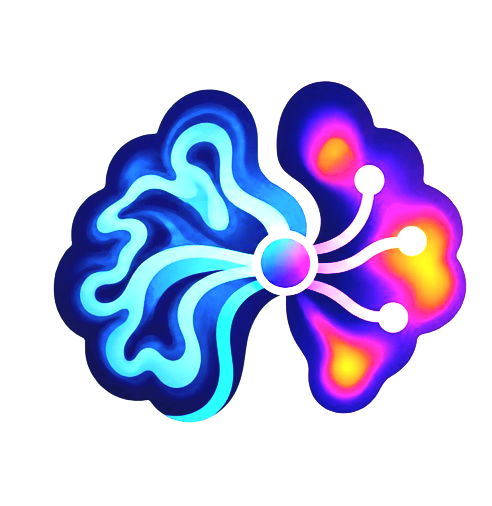
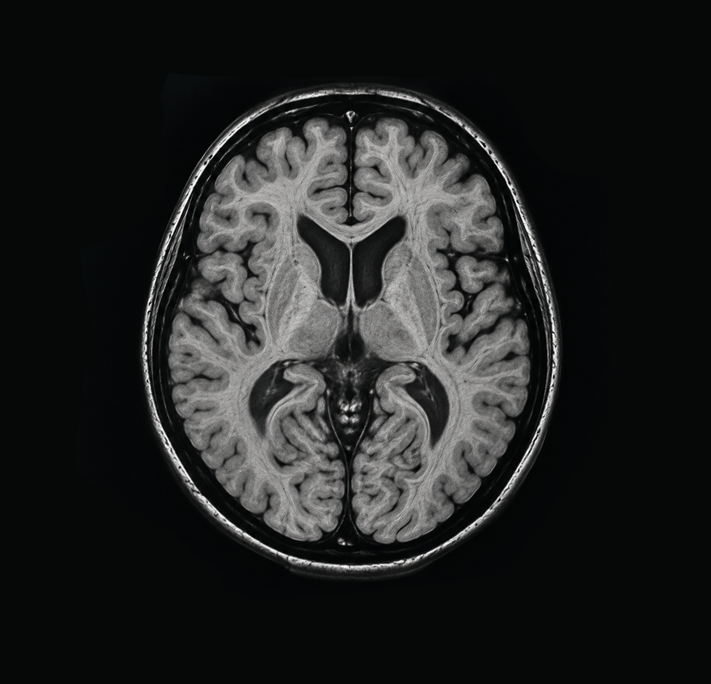
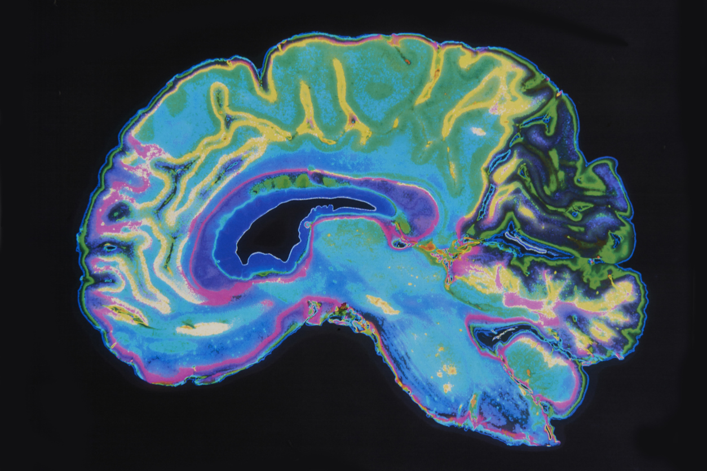

ALZFUSION+
Understanding
Alzheimer's
Through AI
Exploring Alzheimer's disease through multimodal brain imaging and deep learning.


MRI + PET
Combining complementary imaging information through multimodal fusion.
Two perspectives. One brain.
MRI provides structural information, while PET provides complementary metabolic information. Our system explores how these modalities can be combined using multimodal deep learning.
99.2%
Cross-modal alignment accuracy across combined latent spaces.
+14 Mo.
Earlier detection of cognitive decline markers prior to clinical onset.
The AlzFusion Intelligence Pathway
A structured multi-phase pipeline moving from multi-site raw clinical ingestion to clinical-grade predictive staging.
Multimodal Ingestion
Simultaneous processing of structural MRI (T1-weighted) and metabolic FDG-PET scans mapped to standardized spatial grids.
Cross-Attention Fusion
Late-stage deep transformer architecture fusing localized structural brain atrophy maps with regional metabolic drop-off gradients.
Prognostic Staging Output
Delivering high-confidence diagnostic indicators and cognitive decline markers up to 14 months prior to clinical symptom onset.
Model Architecture & Validation
Comprehensive technical specifications, cross-validation metrics, and multi-class confusion distribution.
Architecture Specifications
demo| Architecture | Dual-Stream 3D Swin-Transformer + Cross-Attention Fusion demo |
|---|---|
| Input | Paired 3D T1w MRI (1mm isotropic) & FDG-PET (spatial res. 1.5mm) demo |
| Dataset | ADNI-1 / ADNI-2 / ADNI-3 Multi-Site Cohort (10,480 volumes) demo |
| Split | 70% Training / 15% Validation / 15% Blinded Test (Subject-Stratified) demo |
| Metrics | 99.2% Accuracy, 0.96 ROC-AUC, 98.4% Sensitivity, 98.9% Specificity demo |
Clinical Validation Visuals
demoWhat the Workspace Gives You
High-throughput tensor fusion analytics engineered for reproducible multimodal research.
Paired Ingestion
Streamlined ingestion of structural T1-weighted MRI and metabolic FDG-PET volumes in DICOM and NIfTI formats.
Spatial NormalizationAttention Maps
Cross-attention visual attribution isolating complementary atrophy and hypometabolism clusters in 3D coordinate space.
Voxel HeatmapsStage Prediction
Probabilistic staging classification across CN, MCI, and AD with sensitivity for pre-symptomatic cognitive decline.
Tri-Class StagingExportable Reports
Comprehensive clinical research dossiers summarizing tensor parameters, calibration scores, and volumetric percentiles.
PDF / JSON ExportResearch Inquiries
Key details regarding imaging requirements, cross-attention mechanics, and clinical scope.
Is AlzFusion+ a standalone clinical diagnostic tool? +
No. AlzFusion+ is strictly an academic research and investigative framework designed to evaluate multimodal fusion architectures. It is not approved by medical regulatory bodies for independent radiological diagnosis.
What imaging modalities and file formats are supported? +
The system ingests paired 3D T1-weighted structural MRI and FDG-PET metabolic volumes. Accepted formats include standard DICOM (.dcm) series as well as NIfTI (.nii, .nii.gz) files.
How does cross-attention improve early MCI marker detection? +
Traditional single-modality pipelines miss subtle early indicators. By attending structural atrophy maps to metabolic deficit regions, the cross-attention core captures co-occurring neurodegenerative markers up to 14 months earlier.
Can research teams export attention weights and staging data? +
Yes. All inference runs produce exportable JSON dossiers and PDF summaries containing normalized attention weight volumes, confidence scores, and registration parameters for reproducible research.
Run your first paired analysis
Upload paired DICOM or NIfTI scans to test multimodal cross-attention staging in real-time.